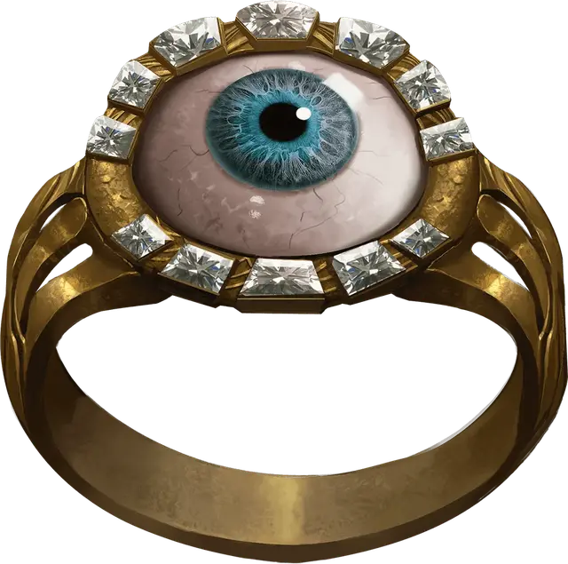

Кольцо проникающего зрения
Ring of X-ray Vision
Кольцо, редкое (требуется настройка)

Рекомендованная стоимость 501-5 000 зм
Нося это кольцо, вы можете действием произнести его командное слово. Сделав это, вы сможете видеть через твёрдую материю в течение 1 минуты. Радиус этого зрения — 30 футов. Для вас твёрдые предметы в этом радиусе выглядят прозрачными и не препятствуют проходить сквозь них свету. Это зрение может проникать сквозь 1 фут камня, 1 дюйм обычного металла или 3 фута дерева или земли. Более толстые препятствия, а также тонкий лист свинца блокируют обзор.
Каждый раз, когда вы используете это кольцо повторно до совершения продолжительного отдыха, вы должны преуспеть в спасброске Телосложения Сл 15, иначе получите одну степень истощения.